4．三次与四次方程的解法
用配方法解二次方程是从巴比伦时代就已经知道的，从那时起直到1500年，这方面的唯一进展是印度人作出的，他们把x2＋3x＋2＝0与x2-3x-2＝0那样的二次方程作为同一类型来处理，而他们的前人乃至文艺复兴时期的绝大多数后继者却宁愿把后一个方程作为x2＝3x＋2的形式来处理。如前所指出的，卡丹确曾解出一个有复数根的二次方程，但他认为这些解是无用的而未加考虑。至于三次方程，则除了个别情形之外数学家还对之束手无策，直到1494年那么晚近的年月，帕乔利还宣称一般的三次方程是不可能解的。
1500年左右，波洛尼亚的数学教授费罗（Scipione dal Ferro，1465—1526）解出了x3＋mx＝n类型的三次方程。但他没有发表他的解法，因在16，17世纪时，人们常把所得的发现保密，而向对手们提出挑战，要他们解出同样的问题。但在1510年左右，他确曾把他的方法秘传给菲奥尔（Antonio Maria Fior，16世纪前半叶）和他的女婿兼继承人纳韦（Annibale della Nave，1500？—1558）。
直到布雷西亚（Brescia）的丰塔纳（Niccolò Fontana，1499—1557）出场之前，情况没有什么变化。这人在孩提时被一个法国兵用马刀砍伤脸部而引起口吃，因此大家称他为塔尔塔利亚，意即“口吃者”。他出身贫寒，自己学会拉丁文、希腊文和数学。他靠着在意大利各城市讲授科学谋生。1535年，菲奥尔向塔尔塔利亚挑战，要他解30个三次方程。塔尔塔利亚说他早已解出了x3＋mx2＝n（m与n是正数）类型的三次方程，这次解出了所有30个方程，其中包括x3＋mx＝n类型的方程。
在卡丹的恳切要求之下，并发誓对此保守秘密，塔尔塔利亚才把他的方法写成一首语句晦涩的诗告诉给卡丹。这是1539年的事。1542年卡丹和他的学生费拉里（1522—1565）在纳韦访问他们的时候，肯定认为费罗的方法同塔尔塔利亚的方法是相同的。卡丹不顾他的誓言，把他对这个方法的叙述发表在他的《重要的艺术》里。他在第十一章里说：“波洛尼亚的费罗差不多在30年以前就发现了这个法则，并把它传给威尼斯的菲奥尔，菲奥尔在他与布雷西亚的塔尔塔利亚竞赛的时候使塔尔塔利亚有机会发现这一法则。塔尔塔利亚在我的恳求下把这方法告诉了我，但保留了证明。我在获得这种帮助的情况下找出了它的各种形式的证明。这是很难做的。我把它叙述如下。”
塔尔塔利亚抗议卡丹背信弃义，并在《各种问题与发明》（Quesiti ed invenzioni diverse，1546）中发表了他自己的方法。但是无论在这本书中还是在他的《数量概论》（1556，这是阐释那个时代的算术知识和几何知识的一本好书）中，他都没有给出关于三次方程本身的更多材料。关于谁先解出三次方程的争议使塔尔塔利亚与费拉里发生公开冲突，最后以双方肆意谩骂而告终，但卡丹并未参与其中。塔尔塔利亚自己也不是无可非议的，他出版了阿基米德的一些著作的译本，实则是抄自穆尔贝克的威廉（William of Moerbecke，卒于1281年左右）的，并且他自称发现了物体沿斜面运动的规律，但实际上这是约尔丹努斯·奈莫拉里乌斯创立的。
在卡丹所发表的方法中，他先以x3＋6x＝20为例。但为说明这个方法的一般性，我们来考察
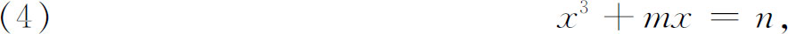
其中m与n是正数。卡丹引入t与u两个量，并令
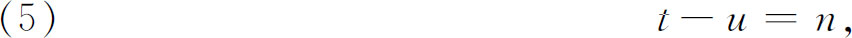
以及
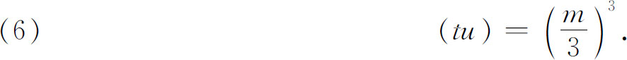
然后他断言
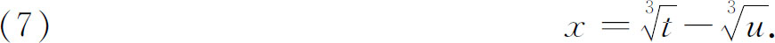
他利用（5）及（6）进行消元并解所得的二次方程，得出
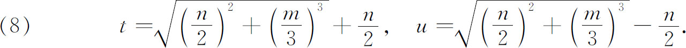
这里我们也像卡丹那样取正根。求出了t和u后，卡丹取两者的正立方根，并用（7）给出x的一个值。据认为这就是塔尔塔利亚所得出的同一个根。
以上是卡丹发表的方法。不过他得证明（7）给出的是x的一个正确的值，他的证明是用几何方法的。卡丹把t和u看成立方体的体积，其边长各为
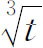
和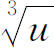
，而乘积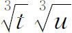
是两边所形成的矩形，其面积为m/3。又，我们所说的t-u＝n对卡丹说是两个体积之差等于n。于是他说解x就等于两立方体边长之差，即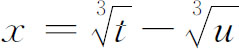
。为证明这x值是对的，他叙述并证明一个几何引理，这就是：若从一根线段AC（图13.2）上截去一段BC，则AB上的立方体等于AC上的立方体减去BC上的立方体再减去以AC，AB及BC为边的正平行六面体。这个几何引理的内容当然只不过是说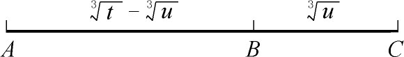
图13.2
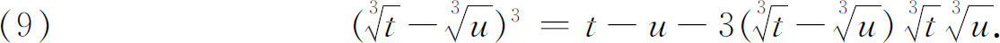
有了这个引理（应用二项式定理，我们知道这引理必然成立，但卡丹是引用欧几里得书中的定理来证明的），卡丹就只要证明：若设
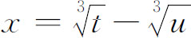
，t-u＝n以及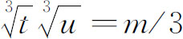
，则从引理便得x3＝n-mx。于是，如果他选取了t和u使之能满足条件（5）与（6），则（7）所给出的以t与u表达的x值就能满足三次方程。然后他纯粹用语言叙述这方法的算术规则，告诉我们怎样按照（8）用m及n表示t及u并作出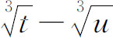
。卡丹（还有塔尔塔利亚）又解出了下列三种特殊类型的方程：
x3＝mx＋n，x3＋mx＋n＝0，x3＋n＝mx．
他需要把这三种情形都分别处理，并且把三者同方程（4）分别处理，原因是：第一，那时候欧洲人写的方程中只含正数的项；第二，他得对每种情形所用的法则分别给出几何上的说明。
卡丹还给出怎样解x3＋6x2＝100这类方程的方法。他知道怎样消去x2项，即由于该项的系数是6，他以y-2代x，得出y3＝12y＋84。他还指出像x6＋6x4＝100这样的方程在设x2＝y后可作为三次方程来处理。他在书中自始至终都给出正根和负根，尽管他把负数称作虚拟的数。但对复数根他是略而不提的。事实上，他在第37章中把那些既解不出真根（正数根）又不能解出假根（负数根）的问题称作错题。书中讲得很详细——对现代读者来说甚至腻人——因为卡丹把许多情形（不仅是对于三次方程，而且对于那些为求t及u而必须解出的辅助二次方程）都一一分别处理。在每种情形下，他把方程都写成各项有正系数的形式。
卡丹解三次方程的方法中有一个疑难点，他对此虽然指出了但并未解决。当三次方程的三个根都是实根而且各不相同时，可以证明t和u将是复数，因为（8）中的被开方数是负数，然而我们却需要用
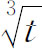
和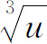
来求得x。这就意味着实数可以用复数的立方根来表示。但这三个实根却不能用代数方法（也就是用根式）得出。这种情形塔尔塔利亚称之为不可约的。我们也许以为，实数既能用复数组合来表示，这件事可能会使卡丹认真看待复数，但事实并非如此。韦达在他著于1591年并出版于1615年的《论方程的整理与修正》（De Aequationum Recognitione et Emendatione）中(8)，已能用一个三角恒等式解出了不可约三次方程，从而避免使用卡丹的公式。这个方法如今还在用。他从下列恒等式开始：
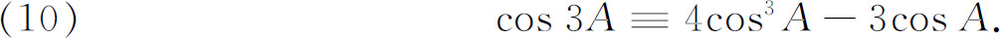
令 z＝cos A，这恒等式就变为
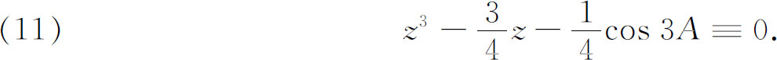
设所给三次方程是（韦达处理的是x3-3a2x＝a2b，其中a＞b/2）
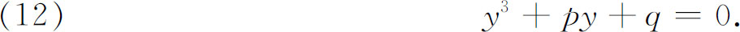
代入y＝nz，其中n可按需要指定，便可使（12）的系数化成同（11）的系数一样。将y＝nz代入（12），得
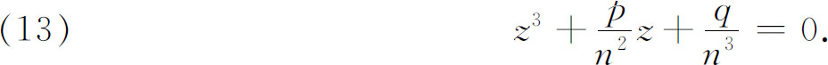
现在我们需要取n使p/n2＝-3/4，故
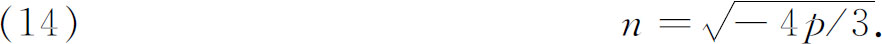
选取了这个n值后，再取A值使
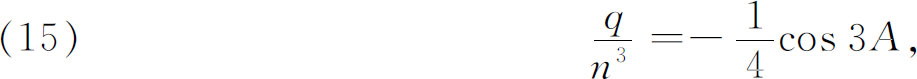
也就是使
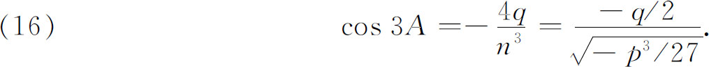
我们可证明：若三根是实数，则p是负数，因而n是实数。又因｜cos 3A｜＜1，故可从三角函数表查出3A。
不管A取何值，cos A总满足（11），因（11）是个恒等式。现已选取A使（13）成为（11）的特例。对于这个A值，cos A满足（13）。但A值是由（16）确定的，而这A又确定了3A。但若A是满足（16）的任一值，则A＋120°及A＋240°也满足（16）。因z＝cos A，故有三个值满足（13）：
cos A，cos（A＋120°）及cos（A＋240°）．
满足（12）的那三个值是z值的n倍，而n是由（14）给出的。韦达得出的只是一个根。
三次方程当然有三个根。对卡丹的三次方程解法的第一个完整的讨论是1732年由欧拉作出的，他强调指出三次方程总有三个根，并指出怎样去求(9)。若ω和ω2是x3-1＝0的复数根，也就是说，是x2＋x＋1＝0的根，则（8）中t和u的三个立方根是
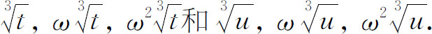
现在必须从第一组里选取一根，从第二组里选取一根，使两者的乘积是实数m/3。［参看卡丹解法中的方程（6）。］因ω与ω2是1的立方根，ω·ω2＝ω3＝1；故据（7）可知合适选取的x应为
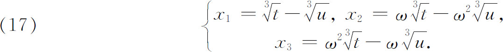
三次方程成功地解出之后接着几乎立即成功地解出了四次方程。解法是费拉里给出的并发表在卡丹的《重要的艺术》中，这里我们用现代的记号把它写出来并用文字系数以示其普遍性。设方程是
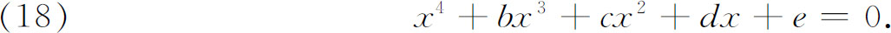
移项后得
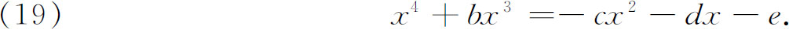
在左边加上
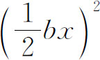
配成平方。得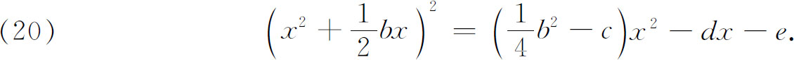
两边再加上
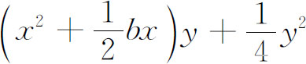
，得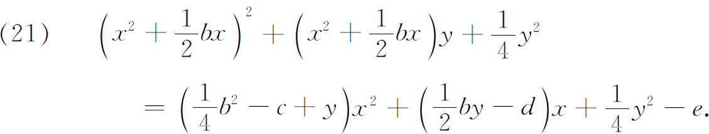
若使右边这个x的二次式的判别式等于零，就能使这一边成为x的一次式的完全平方。于是设
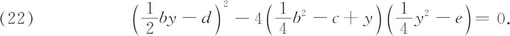
这是y的一个三次方程。选取这三次方程的任一个根代入（21）中的y。根据左边也是个完全平方这一事实，取平方根，得到x的一个二次式，它等于x的两个互为正负的线性函数之一。解出这两个二次方程便得到x的4个根。若从（22）选取另一个根就会从（21）引出一个不同的方程但得到同样的四个根。
卡丹在《重要的艺术》的第39章里讲述费拉里的方法时解出了许多数字系数的特例。例如，他解出了下列类型的方程：
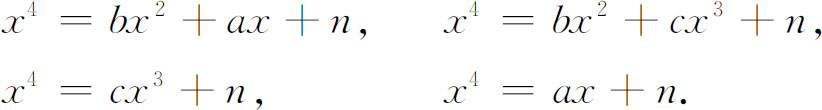
同讲述三次方程的情形一样，他给出了主要代数步骤的几何证明，然后用语言叙述求解的法则。
卡丹、塔尔塔利亚、费拉里通过解出三次和四次方程的许多例子，表明他们曾寻求并获得能用之于一切情况的求解三次和四次方程的方法。注重一般性是一种新的特色。他们的工作做在韦达引用文字系数之前，所以不能利用这个工具。韦达在创用文字系数之后使证明有可能获得普遍意义，又进而追求另一类普遍性。他发现解二次、三次和四次方程的方法很不相同，就想找一种能适用于各次方程的方法。他的头一个想法是用置换法消去比最高次项次数小一次的项。塔尔塔利亚对三次方程这样做了，但并未对所有方程都这样试做过。
韦达在他的《分析术引论》中做了如下的步骤：为解二次方程
x2＋2bx＝c，
他让
x＋b＝y．
于是
y2＝x2＋2bx＋b2．
利用原方程，得
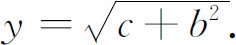
于是
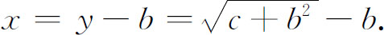
对于三次方程
x3＋bx2＋cx＋d＝0，
韦达先设x＝y-b/3。置换结果得约简三次方程
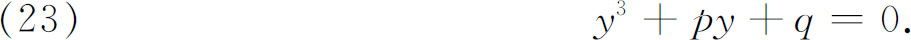
其次他再作一次变换，那就是如今在学校里所教的，就是令
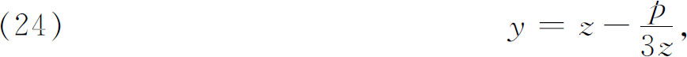
得
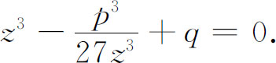
然后他解出这z3的二次方程，得
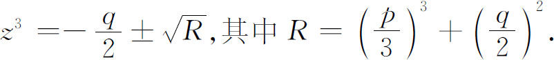
这里也同卡丹的方法一样，有两个z3的值。韦达虽然只用了z3的正立方根，但我们可以用所有六个（复数）根。应用（24）的结果可以证明从六个z值只能得出三个不同的y值。
为解一般四次方程
x4＋bx3＋cx2＋dx＋e＝0，
韦达设x＝y-b/4，于是把方程化为
x4＋px2＋qx＋r＝0．
然后他把末后三项移到右边并在两边加上2x2y2＋y4。这就使左边配成完全平方，然后也像费拉里的方法那样，适当选取y，使右边成为形如（Ax＋B）2的完全平方。为选取合适的y，他利用二次方程的判别式条件，得出y的一个六次方程而且凑巧还是y2的三次方程。这一步以及其余各步就完全和费拉里的方法一样了。
韦达所探求的另一个一般性方法是把多项式分解成一次因子，如同我们把x2＋5x＋6分解成（x＋2）（x＋3）那样。这事他没有做成功，部分原因是他只取正根而舍弃其他一切根，部分原因是他没有足够的理论（如分解因子定理）作为依据来研究出一般方法。哈里奥特也有同样想法但也由于同样原因而归于失败。
寻求一般代数方法的工作接着就转向解四次以上的方程。詹姆斯·格雷戈里在提出他自己的解三次及四次方程的方法后，便试图用这些方法来解五次方程。他和奇恩豪森（Ehrenfried Walter von Tschirnhausen，1651—1708）想通过变换把高次方程化为只含x的一个乘幂和一个常数那么两项的方程。解四次以上的方程的这些尝试都失败了。詹姆斯·格雷戈里在其后关于积分法的著作中猜测，对n＞4的一般n次方程是不能用代数方法求解的。